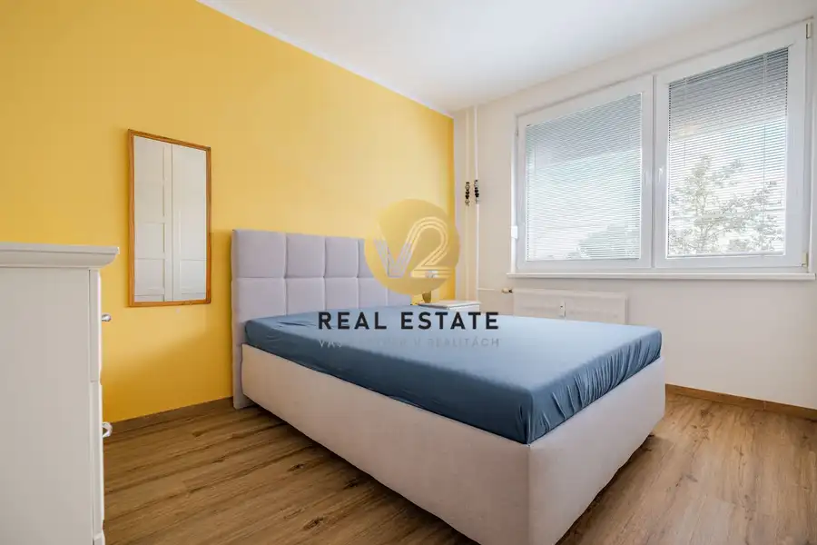
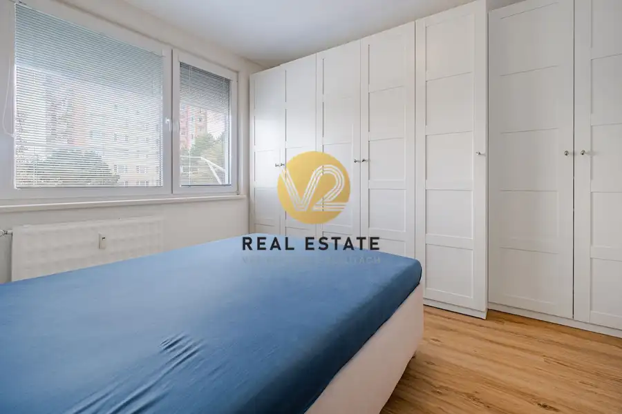

Na predaj 2,5-izbový byt na chrenovej
Nitra


- Dispozícia2-izbový
- Plocha58.7 m²
- Poschodie3. z 7
- StavČiastočná rekonštrukcia
O nehnuteľnosti
Zuzana Bojdová +421 904 300 202e-mail: zuzana.bojdova@v2realestate.sk V2 Real Estate ponúka na predaj 2,5-izbový byt vo vyhľadávanej lokalite Nitra – Chrenová, na Bajkalskej ulici.Ak hľadáte byt s praktickou dispozíciou, množstvom úložného priestoru, táto nehnuteľnosť môže byť práve to, čo hľadáte.Byt s výmerou 58,7 m² Poschodie 3/7Bytový dom prešiel rekonštrukciou spoločných častí a technických rozvodov.DISPOZÍCIA, KTORÁ VYUŽÍVA KAŽDÝ METERVeľkou prednosťou bytu je jeho dobre premyslené dispozičné riešenie.Po vstupe sa dostanete do priestrannej chodby, z ktorej vedie vstup do jednotlivých miestností.Byt ponúka:samostatnú nepriechodnú spálňupriestrannú obývaciu izbusamostatnú kuchyňupraktickú špajzusamostatný šatník / pracovňakúpeľňu samostatné WCvstupnú chodbuPráve špajza a samostatný šatník sú v tejto výmere príjemným benefitom – poskytujú dostatok úložného priestoru a pomáhajú udržať domácnosť prakticky zorganizovanú.BYTOVÝ DOMBytový dom má za sebou rekonštrukciu, ktorá zahŕňala najmä:-zateplenie bytového domu-rekonštrukciu rozvodov, klimatizácia-úpravu spoločných priestorovCHRENOVÁ – LOKALITA, KTORÁ MÁ VŠETKOChrenová patrí medzi obľúbené a vyhľadávané lokality Nitry. Ponúka výbornú dostupnosť, kompletnú občiansku vybavenosť a pohodlné spojenie s centrom mesta.Pre viac info: Zuzana Bojdová +421 904 300 202e-mail: zuzana.bojdova@v2realestate.sk
Parametre
- Cena vrátane energií
- Nie
- Druh
- 2 izbový byt
- Dátum zverejnenia
- 26. 08. 2026
- Energetický certifikát budovy
- V príprave
- Podlažie
- 3
- Počet nadzemných podlaží
- 7
- Stav nehnuteľnosti
- Čiastočná rekonštrukcia
- Typ
- Predaj
- Typ konštrukcie
- Panelová
- Vybavenie
- Výťah
- Úžitková plocha
- 58.7 m²